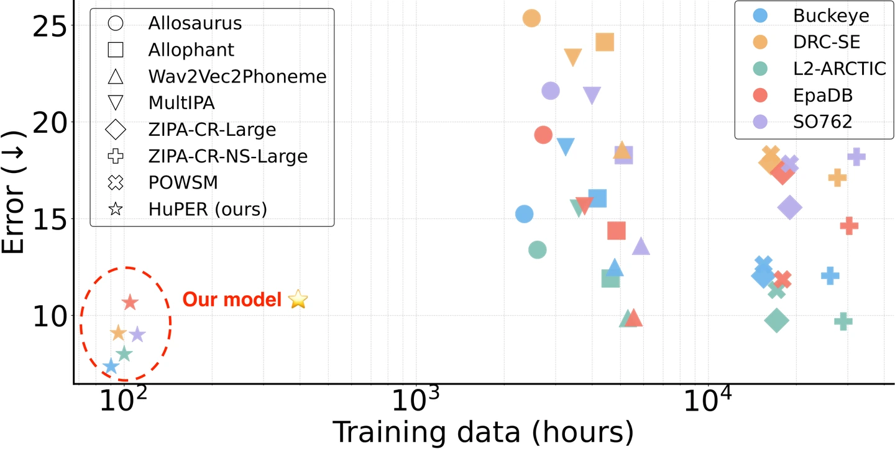
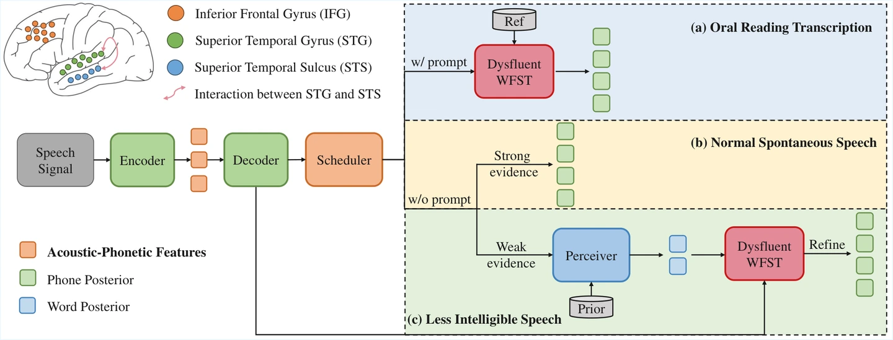
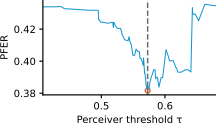
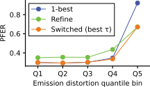

Paper discussion
Bixing Wu

Guo et al. · HuPER · Figure 1
Paper

Guo et al. · HuPER · Figure 2
Experiments


Guo et al. · HuPER · Figure 5b–c · nfvPPA speech
Experiments
| Decoder | PFER ↓ | Refined |
|---|---|---|
| Wav2Vec2Phoneme 1-best | 0.46 | – |
| HuPER 1-best | 0.44 | – |
| HuPER switched | 0.38 | 31.1% |
| Dysfluent WFST | 0.35 | 100% |
| HuPER + reference | 0.32 | 100% |
Guo et al. · HuPER · Table 2